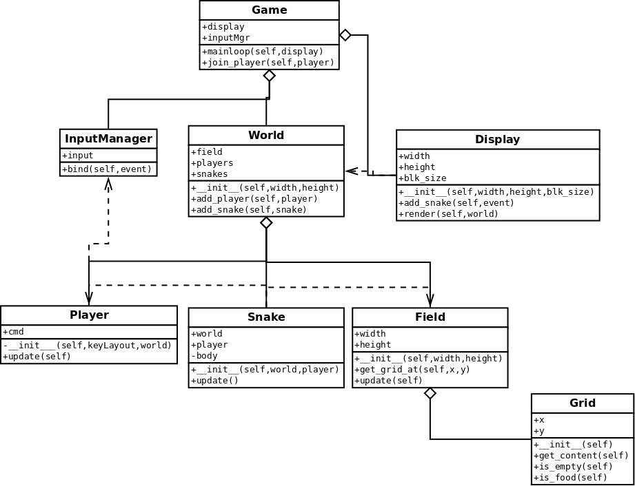
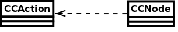

系统分析与设计
实验一报告
小组成员： 李冠贤 10389043 区展明 10389003 梁展瑞 10389084 杨帆 10389048
如果这里有乱码或其他问题可以到https://github.com/ZhanruiLiang/sys-analysis上下载。
报告内容：［Part 1］团队成员工作总结。每个人的学号、姓名、个人贡献列表。
［Part 2］Task 2 程序的类图
［Part 3］回答 Task 3 任务的问题（1－4）
阅读"Learn cocos2D Game Development with iOS 5"第三章"Essentials"，［Discuss2－UML and Technical Resource］回答以下问题（1－4）：
1）阅读P41，画一个UML类图表示 CCNode 与 CCSence、CCLayer、CCSprite概念之间的关系。文献中那句话给了你启发？
2）阅读P42-43，根据图3-3，用一个UML类图表示CCSence、CCLayer、CCSprite之间的关系。
提示：Composite design pattern（组合模式）是最关键的词，如果你了解一点软件设计模式（Software design pattern），你将更容易领会作者的意图，如层次的含义与实现。
3）
阅读P5－47, 一个对象（myCCSprite），如僵尸在被子弹击中后，程序执行了 myCCSprite.runActtion(myCCBlink)语句，你认为这个僵尸将产生什么样的显示效果？用UML类图描述 CCNode 与 CCAction 之间的关系。（中级话题：显然，这时个典型的设计技术，它属于哪种设计模式？）
4）
阅读P51－56, 请问游戏系统框架中，谁（哪个对象）在管理 CCScence 的实例对象（或者说，游戏中每个场景的切换，调度是谁管理的）？解释" The CCDirector class is a singleton（单实例模式）" (P51)的含义，并写出获取 CCDirector 类的对象实例的方法。
［Part 4］游戏 Domain Model & Design Class Diagram
［part 5］回答以下问题：
1）复习教材 Chapter 1.6 "What is the UML"，结合你在实践中的经验，用自己的语言说明UML在项目中的作用。
2）根据你的观察，领域模型和设计类图都是类图，总结它们之间的区别。（参考：Class Diagram ）
3）面向对象的应用程序开发API，通常架构以框架（Framework）形式提供（如cocos2d游戏框架），请述说 Framework(Archecture) 与 Function Library （程序库）之间的区别。
4）请根据项目经验，总结导致需求、设计发生变化的原因，什么阶段会产生这些变化。
［Part 6］你对这个案例的想法和建议。
［附件］可运行程序的源代码。
[Part1]
团队成员工作总结
| 姓名 | 学号 | 个人贡献列表 | 个人贡献百分比 |
|---|---|---|---|
| 李冠贤 | 10389043 | 组长、分工、grid模块、field模块、文档 | 24.7% |
| 区展明 | 10389003 | inputManger模块、ai、testcase | 25.1% |
| 梁展瑞 | 10389084 | testcase、游戏逻辑、UI、架构 | 23.9% |
| 杨帆 | 10389048 | 游戏逻辑、架构、UI、display模块 | 26.3% |
[Part2]
[Part3]
答：
- 1)A cocos2d node is any object that is derived from the CCNode class.
- 2)
- 3)闪烁效果。 
- 4)CCDirector在管理。单实例模式是在整个应用生命周期只产生唯一一个全局实例。原文：A singleton is a regular class that is instantiated only once during the lifetime of the application。获取方法：使用静态指针指向单实例，如：CCDirector::ShareDirector()。
[Part4]
domain_model
design_class_diagram

[Part5]
答：
- 1)UML在项目开发中起到的作用主要体现在以下几个方面：第一，在项目初期时主要做的是设计方面的工作，UML就能够帮助我们设计或者使设计可视化、具体化。例如这次的项目的目的就是做一个贪吃蛇的游戏，但是我们并不知道具体有怎样的要求，也不知道究竟能如何去实现，所以首先需要做的就是设计这样的一个游戏，使用UML以及查看贪吃蛇的规则，我们可以画出一些最初的草图，例如类图、领域模型、一些用例图等，这些可以帮助我们得出一些总体设计的标准，然后再进行细化，这样就能更加容易把设计需求与之后需要的代码框架结合起来，便于开展之后的操作。第二，UML可以对项目规范化。我们一个组的几个人可能会被分派到不同的模块开发任务中，如果没有UML的设计图，那么我们很容易会进入到各自自定义的一些规则之中，那么对于整个开发是不利的，到最后可能不能整合所有人的代码。这就体现了UML的规范化性能。第三，UML也有一些顺向工程、逆向工程，便于项目的开发效率以及校验。顺向工程我们没有用到，但逆向我们也试过，主要是看生成的类图与我们设计的比较，看看实际过程中产生了怎样的不同，从而提高项目的完整性。
- 2)领域模型是对领域内的概念类或现实世界中对象的可视化表示。而设计类图是以面向对象为基础的设计方法。所以有以下几个不同的地方，第一，领域模型比设计类图更为抽象;第二，领域模型比设计类图更接近于现实，反过来说，设计类图比领域模型更接近真实代码;第三，领域模型一般在设计类图之前的工作流中产生。
- 3)框架(framework)是为解决一个或一类问题的一个拥有部分实现的代码程序的软件产品，用户一般只需要使用框架提供的类或函数，即可实现该类或函数的全部功能。但由于框架的设计限制，用户也必须自己去继承一些框架未完全实现的类和方法，然后进行自己的开发。开发者在使用框架的时候，必须使用这个框架的全部代码以及整个设计。而库(function library)是将代码集合成的一个产品，供程序员调用。在函数库中的可直接使用的函数叫库函数。开发者在使用库的时候，只需要使用库的一部分类或函数，然后继续实现自己的功能。库比框架轻量，使用方便。
- 4)原因:一，概念需求与实现之间的矛盾，例如，我们在演示的时候提出的，蛇的死亡问题，如果只是按顺序扫一次地图的变化是不可能满足蛇的合法死亡的问题的。二，简单设计与周全的问题，有时候我们设计的时候会想得过于简单，然后再实现的时候发现这样并不可行，不可行的原因是没有考虑到其他可能导致程序出错甚至崩溃的问题，这样就得再重新对这部分进行设计了。三，实现方法多于一个的时候，便会出现取舍的问题，这样有可能会改变原来的设计。以上的原因一般都是在项目的开发阶段会遇到，有些可能在测试阶段遇到。
[Part6]
想法和建议:
- 对这个课题本身是赞同的，首先，规模适中，这样难度也不会很大，需要做的准备工作不多，适合同学发挥。另外，贪食蛇系统本身也有一定复杂性，初设想容易，实际下手要考虑不少问题
- 对展示和总体效果不满意。这个课程的title是系统分析与设计，然而看展示，像是UI分析与设计。UI五花八门，展示的话题类似“我们的果子有三种颜色”，“我们的地图有个虫洞”，“我们设计了新法”。而真正系统分析的时候，竟然简单一幅UML Class Diagram就带过，完全背离课程初衷。
我们认为，精力更多地应花在对系统的理解与分析上，如何设计出高内聚低耦合的系统，如何在保持抽象模型简洁的同时又确保可扩展性，为了实现这些目标应设计的架构和中间可以使用的设计模式。例如，在我们的系统里，蛇和玩家是分开的模块，玩家控制蛇，在玩家又继承出人类玩家或机器玩家(甚至一些调试用途的玩家--可编程玩家)。这样可扩展性大大加强，不仅支持多玩家多组键位，甚至可以将整场游戏“录制”下(并回放)。由此可以看出，对一个系统的认真设计，其中蕴含的潜力和价值是不可小觑的。在我们设计的系统里，就已经包括了Singleton、Iterator、Factory、Observer等设计模式
我们的建议是，在今后的project，尽可能地弱化需要设计UI甚至美工的部分，并尽可能地暴露出需要系统分析的部分。最好的是，不写游戏，而是写一个游戏引擎。
[附件]
请见压缩包